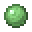
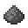
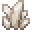

Pride
とある条件を達成した弓師にはその功績を称え、「誇り」というものが付与されます。
ハイティアの誇り
紫のカラーリングされた誇りは、極めて困難な条件を達成した弓師に与えられるため、差別化する為に色を付けています。
| 日本表記 | 英語表記 | 達成条件 |
|---|---|---|
| 万戦錬磨の弓師 | Ten Thousand Battles | 累計10000プレイ |
| 弓師一万の髑髏 | Ten Thousand Skulls | 累計10000キル |
| 一万白星の弓師 | Ten Thousand White Stars | 累計10000勝利 |
イミテイターウェポン毎の誇り
全てのイミテイターウェポンに一つずつ、勝利数1000回達成で得られる誇りがあります。
| イミテイターウェポン | 日本表記 | 英語表記 |
|---|---|---|
 |
空を翔びまわる者 | Soaring in the Sky |
 |
我が名はバステト神 | I am the god Bastet |
 |
紫煙に紛れる者 | Hider in the Purple |
 |
バッドラビット | Doped Bad Rabbit |
 |
赤黒い技潰しの者 | Black Technique Crusher |
|  | 高さを知らぬ者 | Non Knowledge of Height |
 |
並行世界の刺客 | Parallel World Killer |
 |
いざ猪突猛進せよ | Reckless Rusher |
 |
私の血となり肉になれ | Be my blood and my flesh |
 |
ウォーデンの子 | Child of Warden |
 |
フグ愛好家 | Pufferfish Lover |
 |
魔女の一番弟子 | Best Pupil of Witch |
 |
私は聡明な罠師 | Clever Trapper |
 |
双子の魂百まで | Strongest Twins |
|  | 殺意と姿を隠す者 | Disappearing Assassin |
 |
障壁を透視する者 | Wielder of Clairvoyance |
|  | あの日作った雪だるま | Snowman I made that day |